Climate-Driven Vulnerability Assessment
of Hamilton's Urban Forest
for 2030, 2050, and 2080
Data Sources: City of Hamilton Open Data Portal · GBIF Backbone Taxonomy · Metro Vancouver Urban Forest Climate Adaptation Species Selection Database · CanDCS-M6 / Canadian Centre for Climate Services · Ontario Climate Station Records
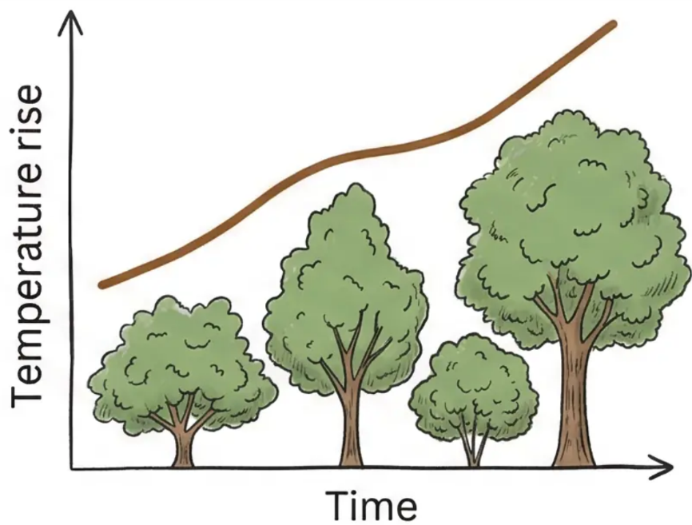
RQ1: Climate Exposure
How vulnerable is Hamilton's current urban forest to future climate change?
RQ2: Species Resilience
Does current species composition provide sufficient resilience to future climate conditions?
RQ3: Spatial Risk Concentration
Which wards and dominant species exhibit the highest climate vulnerability?


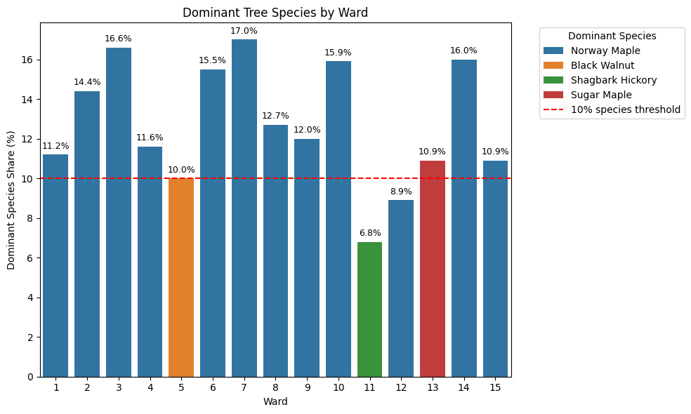
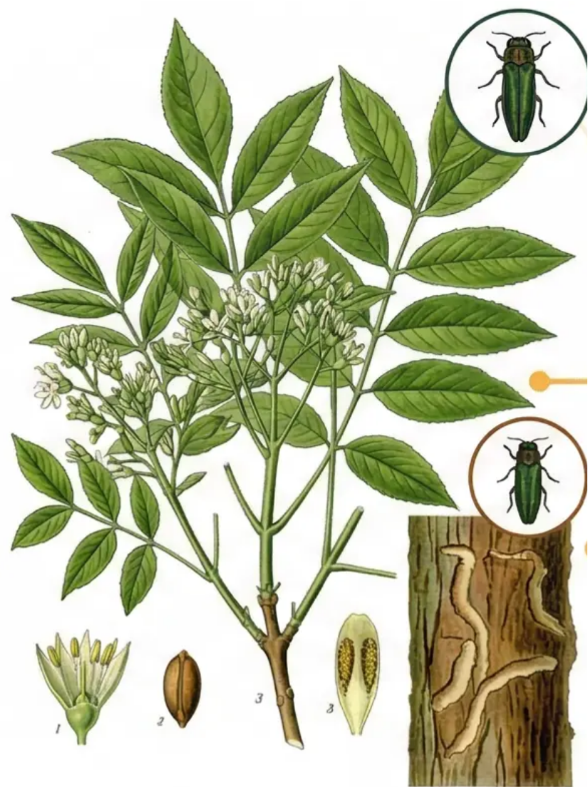
Fraxinus Species (Ash Trees)
9,170 trees (3.3% of inventory)
Extreme pest susceptibility eliminates future planting viability
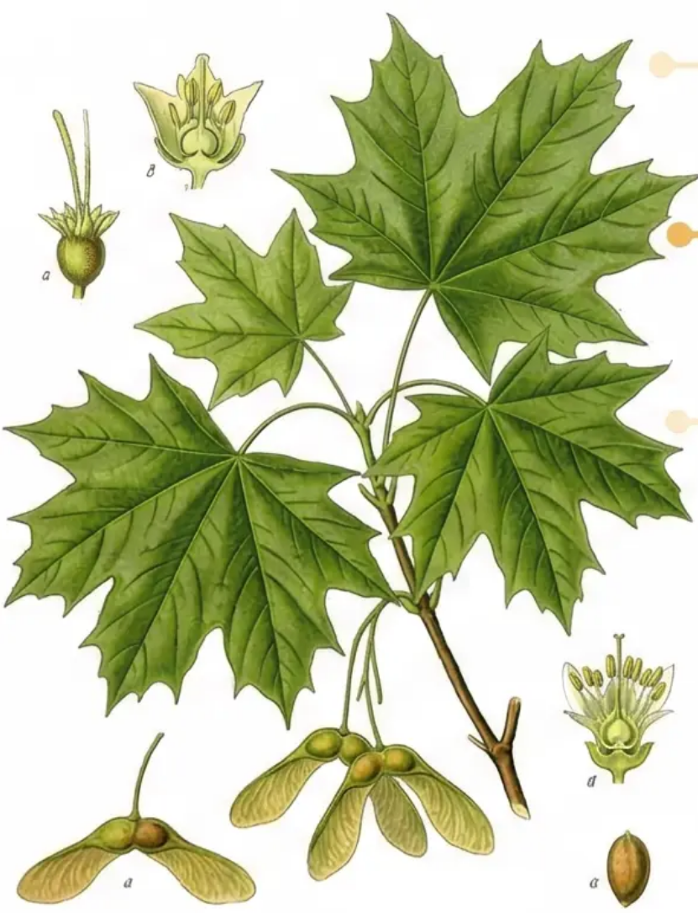
Norway Maple (Acer platanoides)
11.9% of total urban forest
Acer genus exceeds 20% threshold in 14 of 15 wards. Dominant urban species contributing significantly to overall forest vulnerability.
Hamilton's Violations:
- Norway Maple exceeds 10% species threshold
- Acer genus exceeds 20% in 14 of 15 wards
- Ward 4: 31% Acer dominance
- Sapindaceae family approaching 30% limit

Reduces reliance on the dominant Acer genus. Fraxinus excluded due to Emerald Ash Borer risk. Supports climate resilience and biodiversity goals.
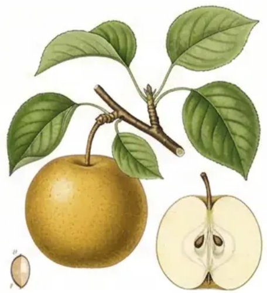
Asian Pear
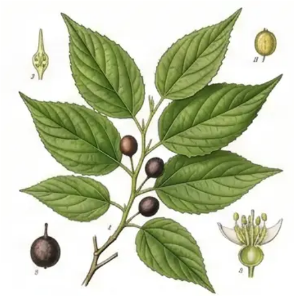
Common Hackberry
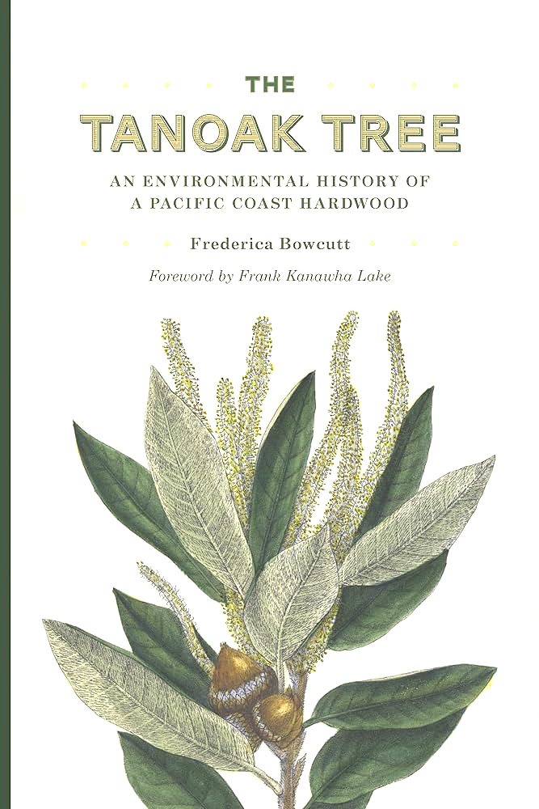
Tanoak
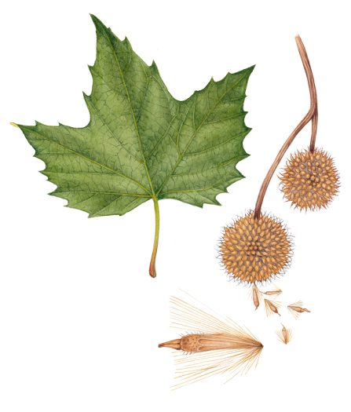
London Plane Tree
Canopy by Ownership per Ward — 2024 LiDAR
State of Urban Forest Report 2026
Replanting Priority Classification — Cross-Reference Analysis
Gap = City-owned canopy % minus Private land canopy % per ward (2024 LiDAR)
| Classification | Wards | Criteria |
|---|---|---|
| CRITICAL | Wards 3, 4, 13 | High public–private gap (>20pp) AND declining canopy 2021→2024. Urgent public intervention + private incentives both required. |
| WATCH | Wards 2, 6, 7, 9, 14 | High gap (>15pp) OR notable decline (>0.5pp). Proactive planting programs and monitoring needed. |
| STABLE | Wards 1, 5, 8, 10, 11, 12, 15 | Low gap or improving canopy trend. Maintain current programs and use as models for underperforming wards. |
Source: State of the Urban Forest Report 2026, City of Hamilton (LiDAR survey by Airborne Solutions, 2024)
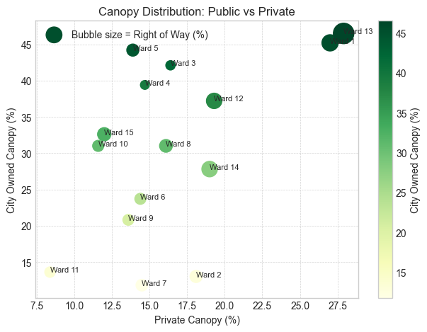
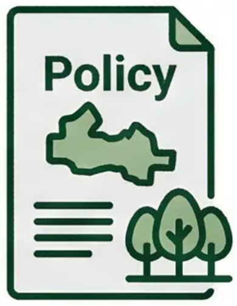
Prioritize Ward 3
Critical climate hotspot requires immediate attention — lowest resilience combined with highest replanting priority score
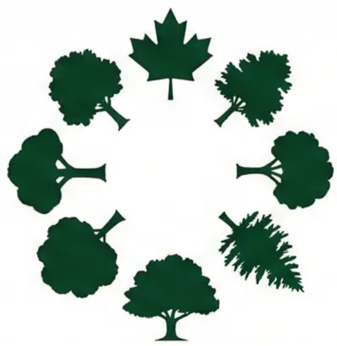
Diversify Species Portfolio
Implement Santamour 10/20/30 rule to reduce maple dependency and enhance ecosystem resilience
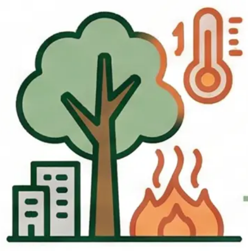
Align Policy Framework
Integrate resilience scoring into City of Hamilton Urban Forest Strategy 2020 implementation
THE BIGGEST RISK to Urban Forest is NOT Climate Alone!
Strategic Climate Adaptation requires Coordinated Action Across Vulnerable Wards, Species Diversification, and Policy Integration!
Primary Data Sources
- City of Hamilton Open Data Portal
- GBIF Backbone Taxonomy
- Metro Vancouver: Urban Forest Climate Adaptation Species Selection Database
- CanDCS-M6 / Canadian Centre for Climate Services
- Ontario Climate Station Records
Key References
- Santamour, F.S. (1990). The triangle test for measuring genetic diversity.
- IPCC AR5 WGII Chapter 19 (2014). Emergent risks and key vulnerabilities.
- Stewart, I.D. & Oke, T.R. (2012). Local climate zones for urban temperature studies.
- Sjöman, H. et al. (2015). Selection approach for urban tree diversification.
- City of Hamilton Urban Forest Strategy (2020).